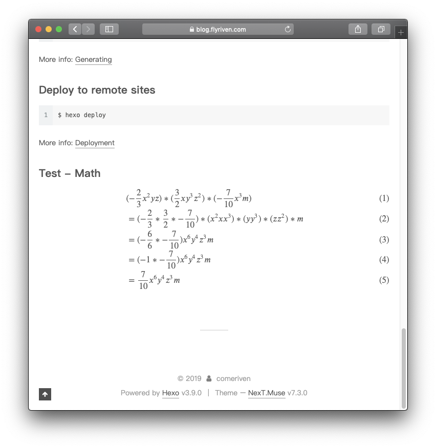

hello everybody,
在我热衷于编写一些笔记发布到hexo所生成的静态博客的时候，遇到了不少问题。其中就是hexo生成的静态资源发布到GitHub pages后并不能正确渲染数学公式。
数学是科学的基础，我们应该热爱它，拥抱它。
之前，我尝试总结数学知识「从初中开始」，遭到我的朋友卢老师无情嘲笑，这并不能形成对我的打击，我依然热爱数学「哪怕我不会」。
大家知道在数学的康庄大道上，总是会有各种各样想不到的事情会发生。
接下来回到正题，怎么解决hexo不能正确渲染数学公式的问题。
更换渲染引擎
第一步我们需要跟换一个渲染引擎。hexo 提供的 hexo-renderer-marked 并不满足我们的需要。
1 | ~$ npm uninstall hexo-renderer-marked --save |
然后我们需要安装新的引擎，hexo-renderer-kramed
1 | ~$ npm install hexo-renderer-kramed --save |
修改主题配置
安装一个npm包无疑是很简单的，接下来我们需要启用next这个主题的Math渲染的功能。
1 | # Math Formulas Render Support |
在 ~/blog/theme/next/_config.yml 中找到 math 这个属性，enable 设置为 true，下面的 mathjax 属性的enable 也要设置为 true
上面 blog 是我用 hexo 初始化博客的目录，theme 就是我下载主题的目录。
接下来，我们需要在post模版中配置启用mathjax，在 ~/blog/scaffolds 目录下找到 post.md 文件打开：
1 | --- |
增加 mathjax: true 这一行
修改引擎
完成了上面的步骤，对达成目标又更近了一步，最后我们需要稍微的修改一点点儿东西，来解决kramed引擎行内渲染的小问题。
首先我们打开文件 ~/blog/node_modules/kramed/lib/rules/inline.js
找到第11行 escape 属性的位置。
1 | var inline = { |
改为：
1 | var inline = { |
第20行 em 属性的位置。
1 | reffn: /^!?\[\^(inside)\]/, |
改为：
1 | reffn: /^!?\[\^(inside)\]/, |
完事儿，齐活儿了，来生成静态资源发布试试：
1 | ~$ hexo clean |
看看效果：
